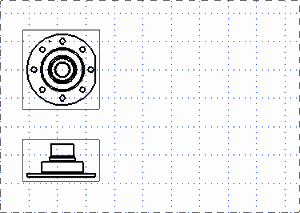
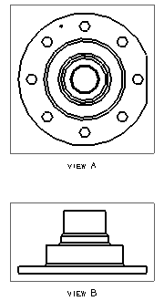

You do not want any of the views on this drawing to display centerlines or labels. Since you have chosen a format that is large enough for full size drawings of this part, you want all your views to be full size (that is, to have the same scale value as the drawing sheet).
Add top and front views. They should be:
Full size
Without centerlines
With no view labels
As soon as you add the base view, use it to create an orthographic front view below it.

Sheet “Sheet 1” Work
Click the middle mouse button to close the Projected View dialog box.
Turn off the grid.
You would like to have NX update the drawing sheet after each change you make. You also want to see a wireframe image on the cursor as you create additional views, but you still want to be able to see the borders around the views as you create them.
Set the drafting preferences that will do the following:
Cause NX to immediately update the drawing views when model changes occur.
Display a hidden wireframe image of a view at the cursor point before it is applied to the drawing sheet.
Add a label under both views.
